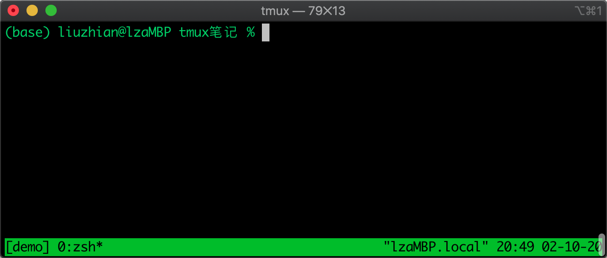
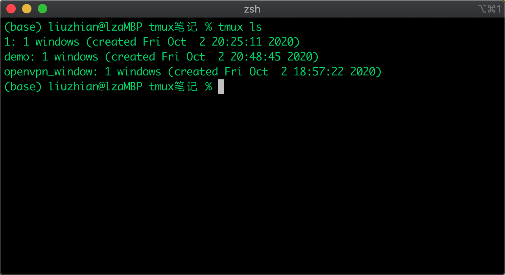
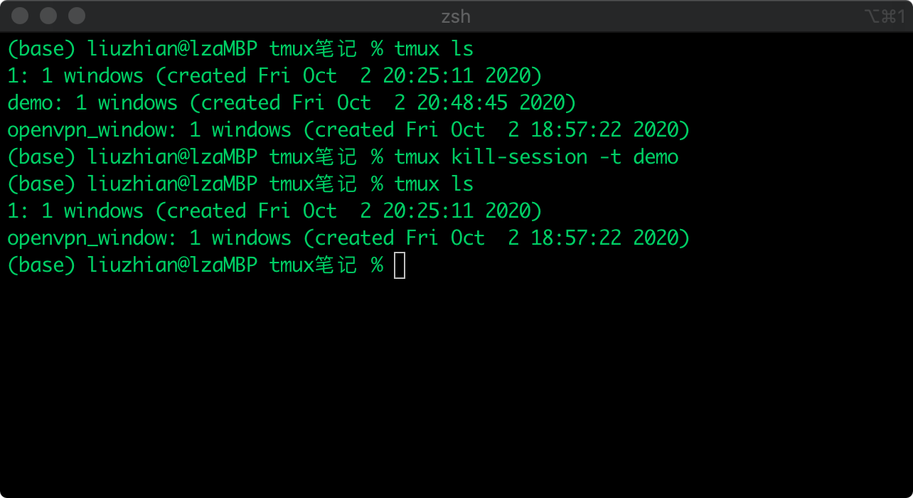
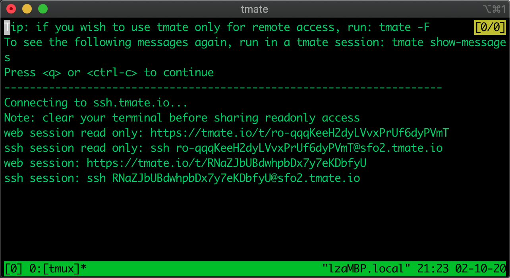
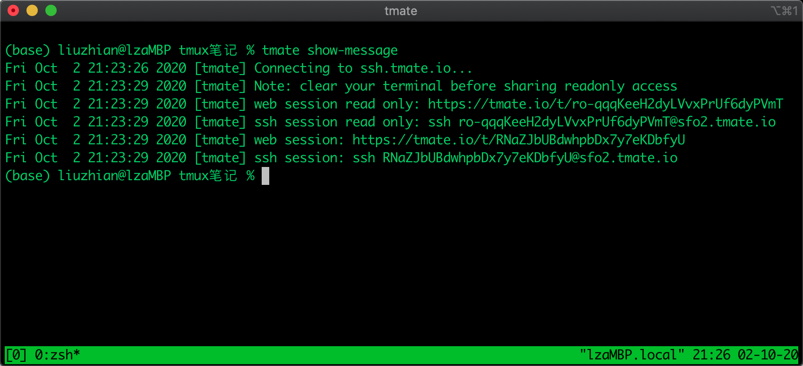
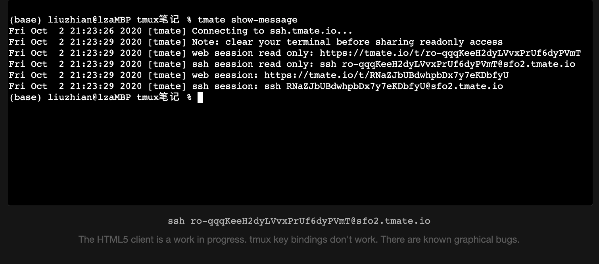
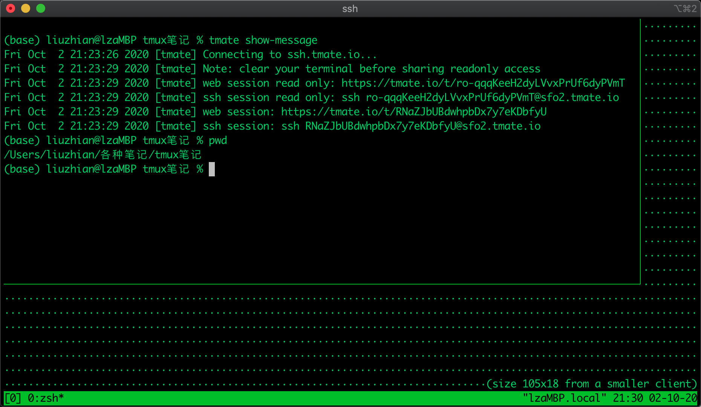

tmux初体验
1. 什么是tmux？
TMUX stands for terminal multiplexer, which is a program runs in a terminal and allows other program to be run inside it. 也就是说，tmux是一个管理终端程序的程序，即所谓终端复用程序。
2. tmux可以干什么？
- 多窗口管理应用程序（当然，这个很多软件都可以完成，比如
iTerm）; - 通过某种会话程序（例如
ssh）连接到server端时，防止因为session的关闭而导致程序中断，甚至，我们可以再new一个session，在那个session中重新恢复tmux中的程序，相当于保护现场的作用； - 会话共享，将 tmux 会话的地址分享给他人，这样他们就可以通过 SSH 接入该会话，很适合结对编程或者code review啥的。
好吧，这些也是我在网上看到关于tmux的介绍，至于我为什么要学习一下这个工具的使用，主要是我要用我的mac通过openVPN去访问实验室的机器，然后我又不想一直让这个终端always stays there。于是，罗宇成同学给我安利了这个神器。
3. tmux 上手
首先肯定是安装了，老夫上来就是brew install tmux一把梭，完事。。
3.1 基本概念
下面这段来源于louiszhai的分享:
tmux采用C/S模型构建，输入tmux命令就相当于开启了一个服务器，此时默认将新建一个会话，然后会话中默认新建一个窗口，窗口中默认新建一个面板。会话、窗口、面板之间的联系如下：
一个tmux
session（会话）可以包含多个window（窗口），窗口默认充满会话界面，因此这些窗口中可以运行相关性不大的任务。一个
window又可以包含多个pane（面板），窗口下的面板，都处于同一界面下，这些面板适合运行相关性高的任务，以便同时观察到它们的运行情况。
3.2 基本操作
先开启一个新的会话，如下：
1 | tmux new -s demo # 新建一个名称为demo的会话 |

这时候，如果我们想关掉这个界面，并希望下次还能接着运行当前会话，那就用detach命令：
1 | tmux detach |
然后就回到了刚才新建会话时的那个界面了，当然，这个detach也是有快捷键的，即Ctrl + b, d，也就是先按下 ctrl加b，然后同时松开这两个键，再按下d键。
如果我想再次回到刚才的会话，咋办？
1 | tmux a # 默认进入第一个会话 |
除了上述基本操作，还有就是如何关闭会话咯！用tmux kill命令来完成即可。针对基本概念中的4种不同概念，就对应有4种kill命令，kill-pane、kill-server、kill-session 和 kill-window。
但是我的记性不大好使，我先查看一下所有的会话:
1 | tmux ls |

如果我们当前正处于会话中，那可以用快捷键Ctrl + b, s，然后用上下键移动，左右键展开，如下：

ok，现在我想关闭这个名字叫demo的会话：
1 | tmux kill-session -t demo # 关闭demo会话 |

删除完后，我们发现后台其实还是运行着2个会话的，名字分别为1和openvpn_window。
让某个程序在后台运行的操作总结：
- 新建一个session，via
$ tmux s -t <sesion_name>; - 在这个session中开启你的程序，whatever command;
- detach the current session we just created, via
$ tmux detach，快捷键是Ctrl + b, d; - attach to a specific session, via
$ tmux -a t <sesion_name>; - [optional] Kill the server/session/window/plane, via
$ tmux kill-<server｜session｜window｜plane> -t <name>。
3.3 会话分享演示
tmux的会话分享使得结对编程变得可能，tmate是tmux的管理工具，它可以轻松的创建tmux会话，并且自动生成ssh链接。
先安装，$ brew install tmate。
然后，用tmate创建一个tmux会话，via $ tmate

这里可以看到当前会话的共享访问链接，可以通过web或者ssh的方式，可以是只读的方式或者是可读性的方式。咱们后续也可以通过命令$ tmate show-message命令来显式地显示这些链接。

咱们不妨来试试，先测试一下web的方式，输入上述的https链接，可以看到如下的界面，可读共享时，我们是无法从键盘输入的：

再试试ssh方式访问，如下：

在ssh客户端窗口输入的命令也会实时地显示在“server端”的界面中。。就是。。我感觉有点延迟。
4. 总结
tmux还是很强大的，这次只是简单地用了一下session中的基本功能，window和plane的很多功能也还没用到，以后用到再查吧，$ man tmux也是很言简意赅的文档。
感谢hxd罗宇成的VPN分享和tmux工具的安利，哈哈。